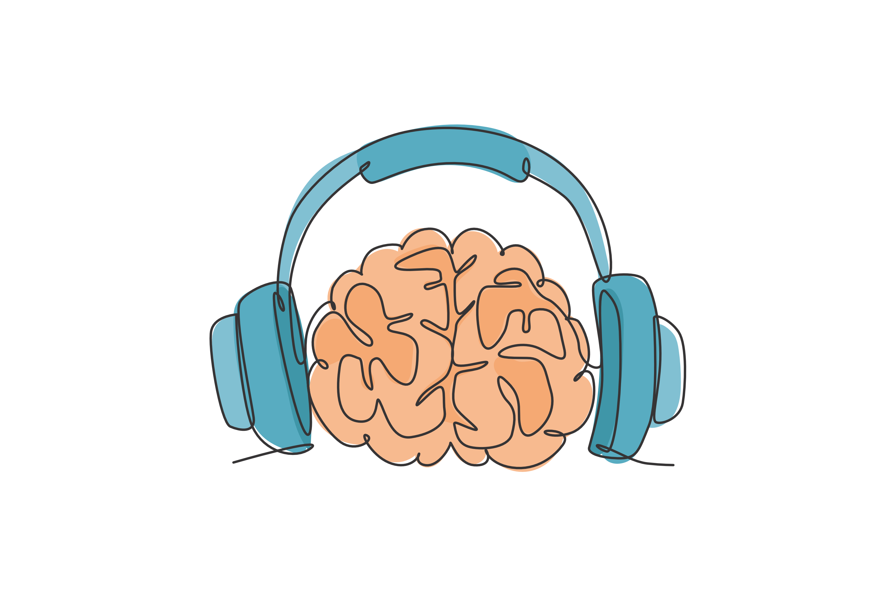

Research Themes
Perceptual strategies in speech and music perception
Speech and music are redundant signals in that it can be expressed and perceived via multiple different acoustic dimensions (e.g., pitch, timing, intensity, and more). To successfully perceive speech and music, listeners need to extract and combine information from multiple dimensions. One assumption often made is that there is a single “optimal” way of combining information from these dimensions. More recent work (both our own and others') has shown that this is not the case. For example, we found that experience with music influences the way we combine acoustic information in speech. Why do different individuals combine information in different ways? We propose that different strategies used to combine acoustic information are useful in different environments and contexts. Current work supported by the Society for Education and Music Psychology Research explores developmental changes in music and speech perception throughout adolescents. More information on this project can be found here.
Mechanisms underpinning auditory attention
The modern world is a noisy one. At any given moment, there are multiple sources of sound that compete for our attention. To make sense of this world, we need to selectively attend to the sounds that are relevant to our current goals and ignore the rest. However, sometimes certain salient sounds capture our attention and distract us from our goals. What makes a sound capture attention? How long does attentional capture last? What are the neural mechanisms underpinning attentional capture? Our lab has previously developed behavioral and neural measures of attentional capture by different sounds and sound features. Through this work, we hope to understand why individuals differ in the degree of attentional capture and what can be done to help listeners resist distraction in real-world listening environments.